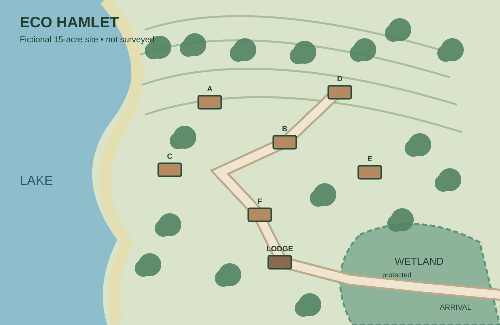

Reuse and repair
Inspect reclaimed containers, use traceable salvaged materials, and favour replaceable cladding and reversible connections.
A fictional Canadian lakeside community
Imagine small, carefully placed homes beside a lake, shared infrastructure, a protected wetland and a community land trust. Built off-site, assembled with minimal disturbance, and designed to belong to the forest.
Explore the concept
The landscape
Explore six proposed homes and a common lodge. The property is invented for discussion, not a surveyed or available parcel.
Select a building to explore its proposed role.
Open architectural concepts
A single 40-foot high-cube container, with an independent screened porch. The shell, internal zones and exterior insulation are illustrated conceptually. This is not a buildable design.

The downloadable OBJ file provides a basic 3D massing model for Blender or other compatible software. Interior walk-through and true cutaway geometry are planned for Phase 2, not falsely represented as complete here.
Construction and stewardship
Inspect reclaimed containers, use traceable salvaged materials, and favour replaceable cladding and reversible connections.
Fabricate and fit out modules before delivery; plan lifting, transport and safe assembly before clearing the site.
Study continuous external insulation, moisture management and ventilated rainscreens. Consider spray foam only where justified.
Protect the wetland and shoreline. Explore native green walls and engineered living roofs without shading solar panels.
Explore permanent, seasonal and optional rental homes on leased sites, with collective stewardship of shared infrastructure.
Provide usable paths, drop-off and emergency access, accessible homes, and bug-screened outdoor gathering spaces.
Open resources
These original conceptual assets are reusable under CC BY 4.0; website software is MIT licensed. Files are editable but not engineered drawings.
Disclaimer: Concept only. No real site, approved zoning, structural analysis, energy modelling, code review or ground lease is provided.